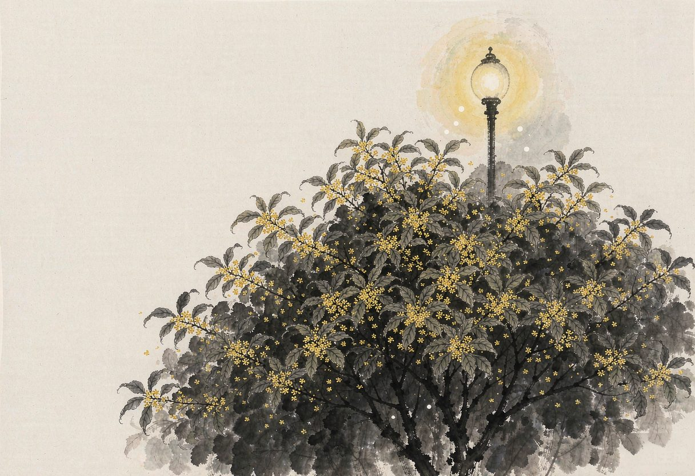

夜来在小区散步，暮色渐浓，凉意微透。忽然间，一股浓烈而清甜的香气扑面而来，如无形的手轻轻拂过鼻尖——是桂花开了。这香气不似玫瑰那般张扬，也不如茉莉那般幽冷，它只是沉甸甸地、暖融融地弥漫在空气里，仿佛把整个秋夜都浸透了。我驻足树下，仰头望去，细碎金黄的小花密密匝匝缀满枝头，在昏黄路灯下闪着微光，竟让我一时恍惚，仿佛又回到了那些被桂花香气浸润的旧日时光。
我自小便与桂花结缘。童年时，每逢秋深，母亲总要蒸些条头糕，蒸笼掀开，白雾缭绕中，糕上撒着星星点点的金黄桂花，香气便如小精灵般钻入鼻腔，勾得人馋虫直动。还有那酒酿圆子，若没有几粒桂花浮在清亮汤面上，便总觉得少了魂魄，滋味寡淡。桂花于我，从来不是仅供观赏的花，它早已化作舌尖上的一缕甜香，是贫瘠岁月里最温柔的慰藉。
后来下乡到农场，日子清苦，连饭食都常带粗粝。有一年深秋，一位农友来看我，踏着泥泞小路走进我那间茅屋。他神秘兮兮地从怀里掏出一个精致的方形小玻璃瓶，凑到我眼前：“猜猜这是啥？”瓶身标签上赫然印着“桂花酒”三个字。
我向来滴酒不沾，可那酒液澄澈如琥珀，瓶口微启，一股浓烈又清雅的桂花香便迫不及待地钻出来，直往人心里钻。席间，我终究没能抵住这香气的蛊惑，破例抿了一小盅。酒液入喉，初时微辣，继而回甘，那桂花的魂魄仿佛在舌尖上跳舞，竟让我这素来不沾杯盏的人，也品出了几分微醺的暖意——原来桂花竟能如此慷慨，连酒也肯为它破例。
恢复高考后，我与女友双双考入上海师大，终于从农场泥泞中挣脱出来。校园生活清简，却因有了彼此而丰盈。我们曾数次同游学校附近的桂林公园，园中桂树成林，秋日里香气如潮水般涌来，几乎令人窒息。记得有一次，我们坐在桂树下的石凳上，她忽然从书包里掏出一块桂花糕，塞进我嘴里。那糕在口中融化，甜味与桂香交织，她眼睛亮亮地望着我：“以后每年秋天，我都给你做。”那甜香与她的笑靥，便成了我此后岁月里最牢固的锚点——原来桂花不仅入食入酒，更能入心入情，酿成一生回甘的蜜。
思绪被一阵童声拉回眼前。小区桂树下，一位老妇正踮着脚，努力够着低垂的枝头，手里攥着个小塑料袋，小心翼翼地摘取桂花。这时，一个小女孩蹦蹦跳跳着跑近，远远便喊：“外婆！你咋摘花呀？”外婆回头，脸上漾开慈祥的笑，把刚摘的一小撮桂花放进袋里：“乖孙来啦？摘点桂花，回头给你煮桂花莲心汤，比超市买的香多了！”
“不行不行！”小女孩急急跑过去，小手一把拉住外婆的手腕，眉头微蹙，“我们老师说的，小区里的花不能摘，是不文明的！”
外婆一愣，有些讪讪地挠了挠头：“这有啥呀？就摘一点点，又不碍事。”
“就是不行！”小女孩声音里带着不容置疑的认真，“摘了花，别人路过闻不到香了！我也不要喝这种桂花汤！”
外婆看着外孙女那副小大人般的郑重模样，忍不住笑了，随即把塑料袋收了：“好好好，听咱乖孙的！不摘了不摘了。”
小女孩这才展颜，拉着外婆的手，仰起小脸：“好！外婆你看，风一吹，桂花香飘好远呀！”
外婆点点头，目光温柔地扫过满树繁花，轻声应和道：“可不嘛，这飘在风里的香，可比摘回家藏在瓶里的更浓呢。”
（本文刊登在2026.5.12《杨浦时报》）